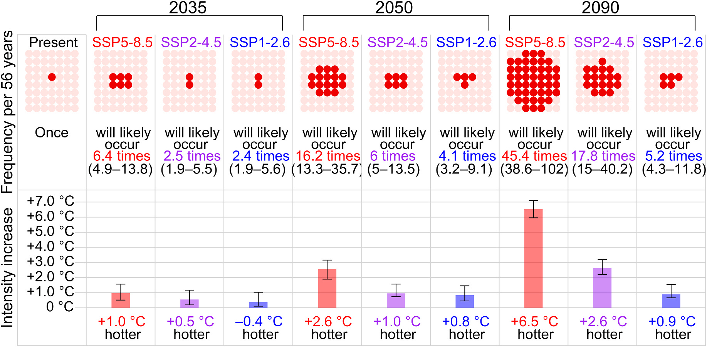

大气科学
叶洋波
博士后 · 复旦大学大气与海洋科学系
我是一名从事极端天气气候研究的博士后，目前工作于复旦大学大气与海洋科学系，合作导师是周文教授。
我主要关注气候变化背景下的极端天气气候事件，包括事件归因及影响归因。我的研究涵盖极端低温、高温热浪、极端暴雨以及空间复合型极端事件等多种类型。
- 复合型极端事件
- 气候变化
- 极端事件归因
研究专栏
全部文章 →代表论文
论文列表 →Anthropogenic climate change amplifies autumn heatwave risks for children during school reopening.
Ye, Y., Qian, C., Dai, A., Li, S., Li, T., Cui, X., Ji, J. S., & Zhang, X.
Weather and Climate Extremes 52, 100892 (2026).
DOI: 10.1016/j.wace.2026.100892Attribution of a record-breaking cold event in the historically warmest year of 2023 and assessing future risks.
Ye, Y., Qian, C., Dai, A., et al.
npj Climate and Atmospheric Science 8, 14 (2025).
DOI: 10.1038/s41612-024-00886-wConditional attribution of climate change and atmospheric circulation contributing to the record-breaking precipitation and temperature event of summer 2020 in southern China.
Ye, Y. & Qian, C.
Environmental Research Letters 16, 044058 (2021).
DOI: 10.1088/1748-9326/abeeaf